Technical Writing
A station is a system, not a pump: duty + standby sized by firm capacity and the N+1 rule, staging across the daily demand curve, the case for a VFD lead, and the suction-side NPSH physics that decides where the pumps sit. Three interactive design charts and a worked station for a town of 50,000.
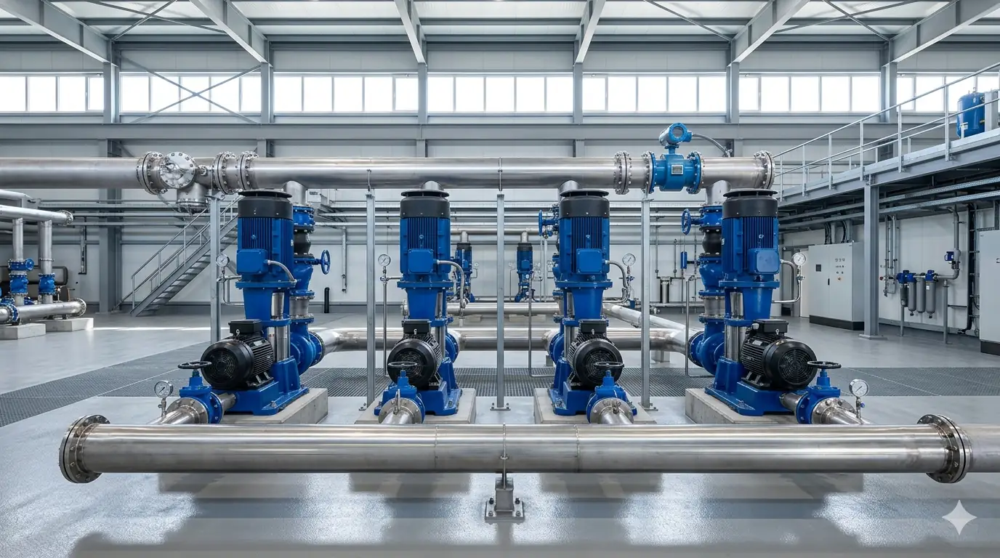
Every storage reservoir holds three volumes at once — balancing, fire and emergency — each sized by a different question. The mass-curve method for the daily peak, the code-driven fire volume that ignores population, the redundancy trade behind emergency storage, and the water-age tax you pay for over-sizing — with three interactive sizing charts and a worked town of 50,000.
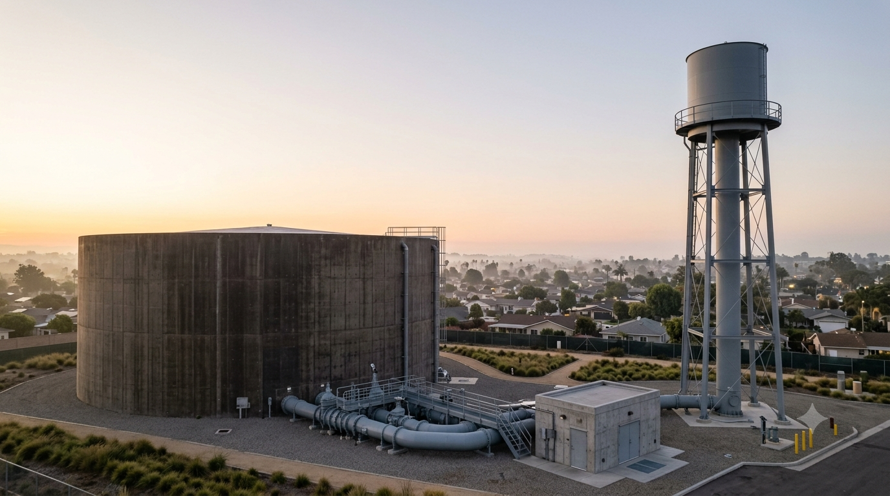
Clogging — not efficiency — is failure mode #1. Non-clog vs vortex vs chopper selection with the energy price of clog resistance, force-main scouring velocity, the V = T·Q/4 wet-well law, and self-cleaning geometry per ANSI/HI 9.8 — with three interactive design charts.
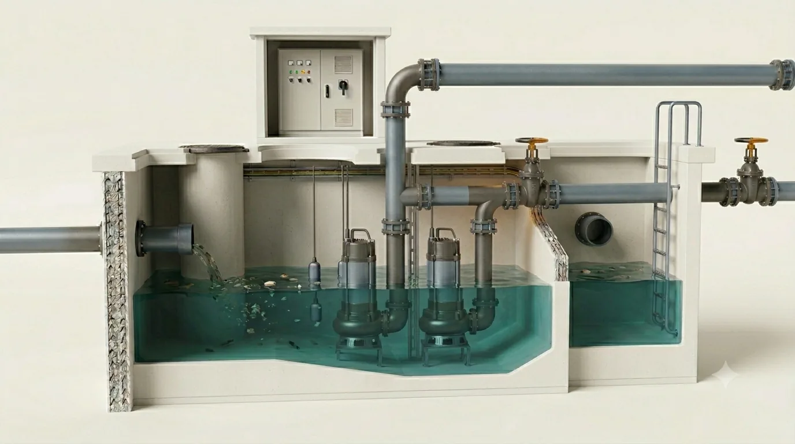
Purchase price is ~6% of what a continuously running pump costs over 20 years — energy is ~84%. The Europump/HI LCC methodology, specific energy (kWh/m³) benchmarking, MEI and IE floors, and the efficiency premium that pays back in under two years — with three interactive cost explorers.
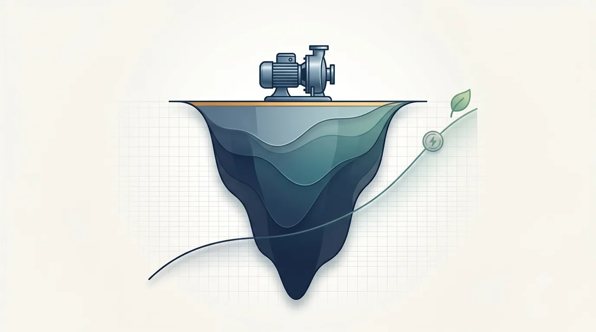
H–Q, efficiency, power and NPSHr live on one sheet — and every value must be read at the same flow, on your trim. ISO 9906 tolerance grades, speed/trim/viscosity corrections, and the classic misreadings that cause field failures — with three interactive charts and worked numbers.
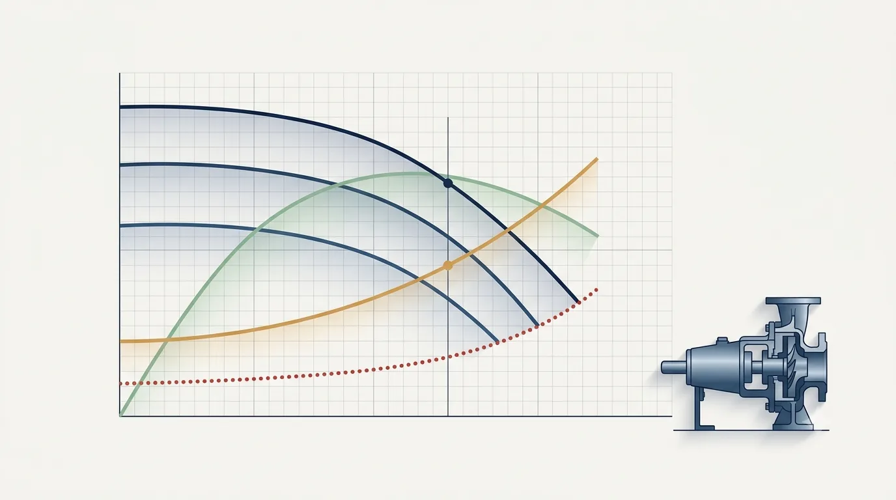
Why two pumps almost never give twice the flow, why a single pump sometimes gives none at all, and how the system curve decides the configuration. Combined curves, the diminishing return, load-sharing failure modes, and duty/standby/assist staging — with two interactive charts.
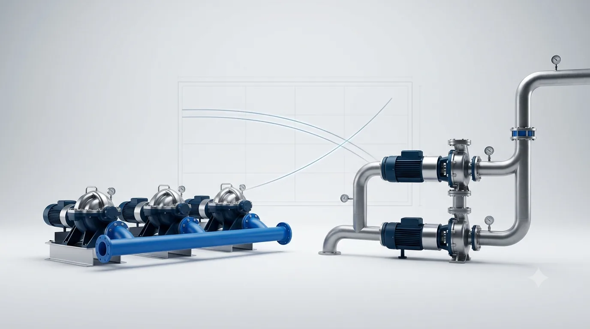
Why the pump you select never operates where the catalogue says it will. Static vs. friction head, the duty-point intersection, BEP/POR/AOR limits, and the costly oversizing trap — with two interactive curve-matching charts and a worked pump-station example.
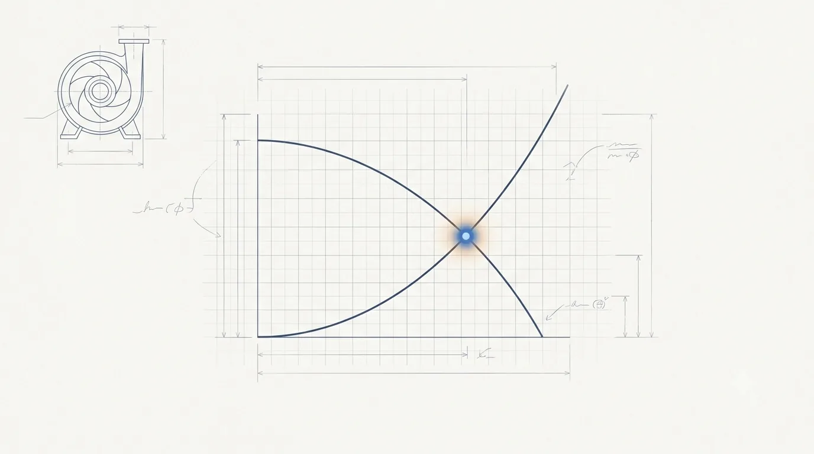
Pump trip, start-up, check-valve slam, emergency closure — which event actually sets the design pressure? A scenario-by-scenario walk through the transient envelope, with three interactive charts and a worked 5 km ductile-iron example.
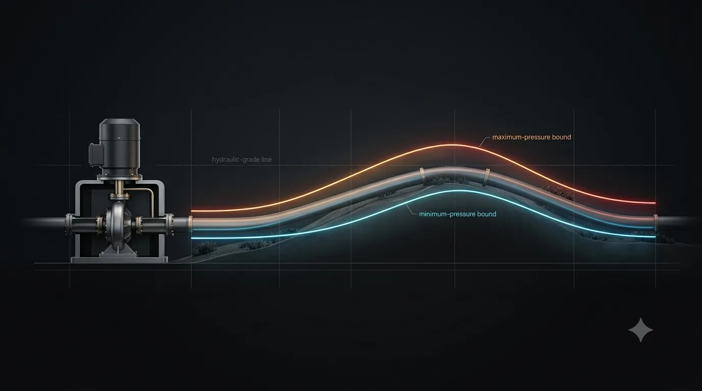
From an existing water model to a full surge study — pump shutdown setup, four-quadrant pump physics, wave speed, calculation options, EPS initialization, and reading the transient envelope where the column-separation slam appears.
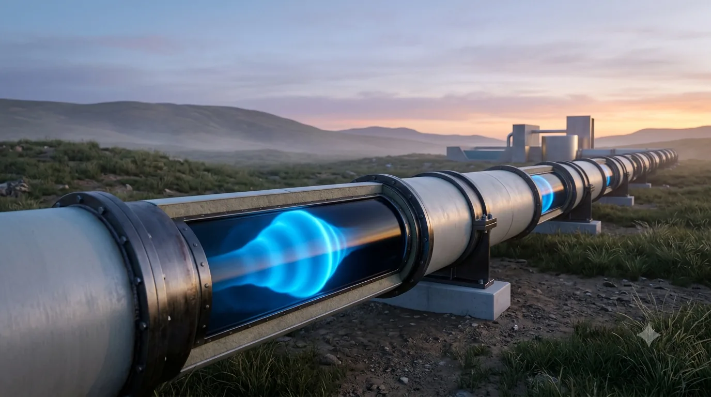
Why do results get worse after adding air valves? Why does a big surge appear with no air pocket visible? Answers to the five questions engineers ask most often after their first HAMMER simulation — plus profile animation setup and Extended Node Data walkthrough.
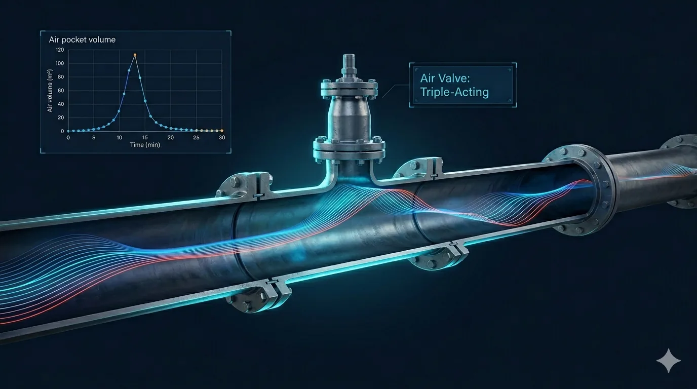
The complete mathematical framework governing surge pressure vs. closure time — from the Joukowsky equation and critical time Tc to the slow-closure attenuation formula. Includes three interactive calculators, an eight-scenario numerical example, and a detailed workflow for modelling valve closure in Bentley OpenFlows HAMMER.
A systematic methodology for selecting, sizing, and locating Combination Air Valves (CAVs) on long transmission mains — from dual-float mechanics and orifice sizing calculations to HGL-based placement, water hammer surge interaction, and installation requirements. Includes interactive diagrams and a DN 800 mm worked example.
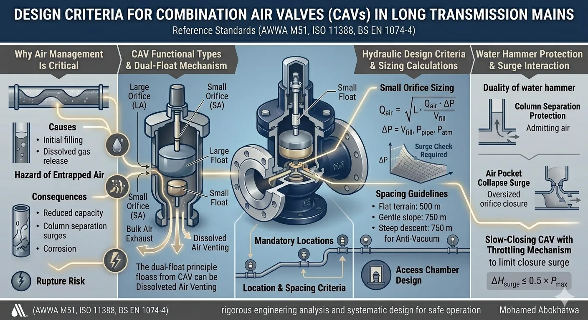
A design engineer's approach to surge vessel sizing — from model inputs to Bentley HAMMER simulation outputs. Includes worked numerical examples, sensitivity analysis, and a practical design checklist.

Six critical and recurring mistakes in hydraulic modeling — from ignoring transient analysis entirely to specifying surge protection without simulation. A practitioner's perspective from 700+ km+ pipeline projects.
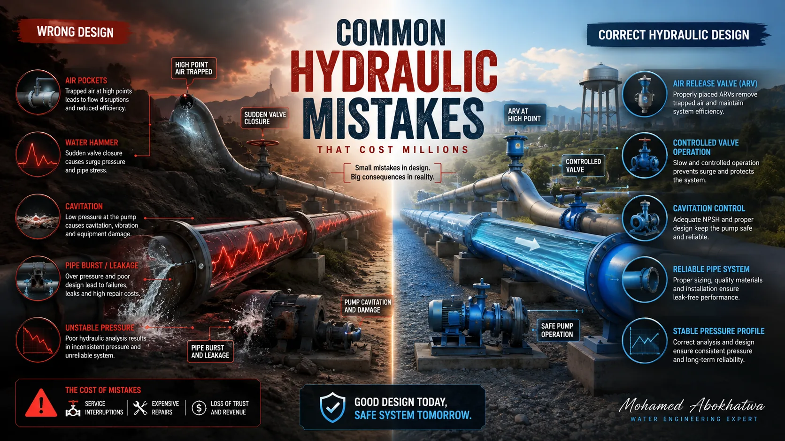
The most sensitive parameter in surge vessel design — and the most frequently set incorrectly. A worked numerical analysis showing how a P₀ error of just 11% requires a vessel 46% larger, and how wrong P₀ renders an otherwise correctly sized vessel completely ineffective.
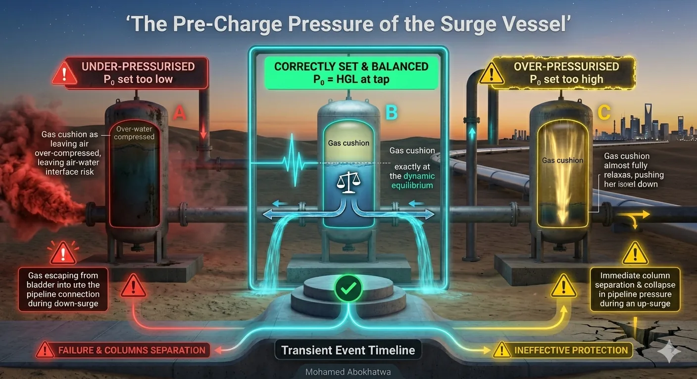
Above-ground pipelines are structural beams — not buried conduits. A systematic methodology for calculating maximum allowable span (bending stress and deflection criteria), managing thermal expansion, and designing for wind loads. Includes worked example for DN 600 steel pipe and a comprehensive design checklist.
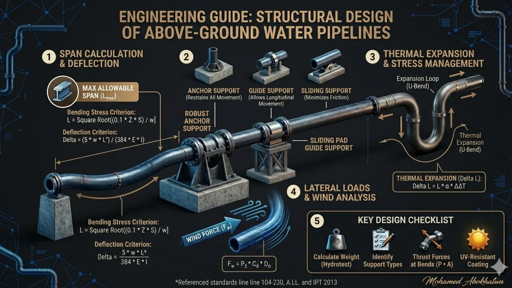
FCVs and PRVs behave very differently during transient events. A practical guide to modelling control valve closure using the TCV approach in HAMMER — including manufacturer Cv curves, Dead Time (1–3 s), and the 4L/a closure time rule for protecting high points on large transmission mains.
Choosing the wrong boundary condition is a common modelling error with serious consequences. A rigorous comparison of Reservoir (fixed HGL) vs. Tank (dynamic HGL) in HAMMER — with guidance on SWRO desalination intakes, strategic transmission mains, and the numerical instability trap of undersized Tank areas.
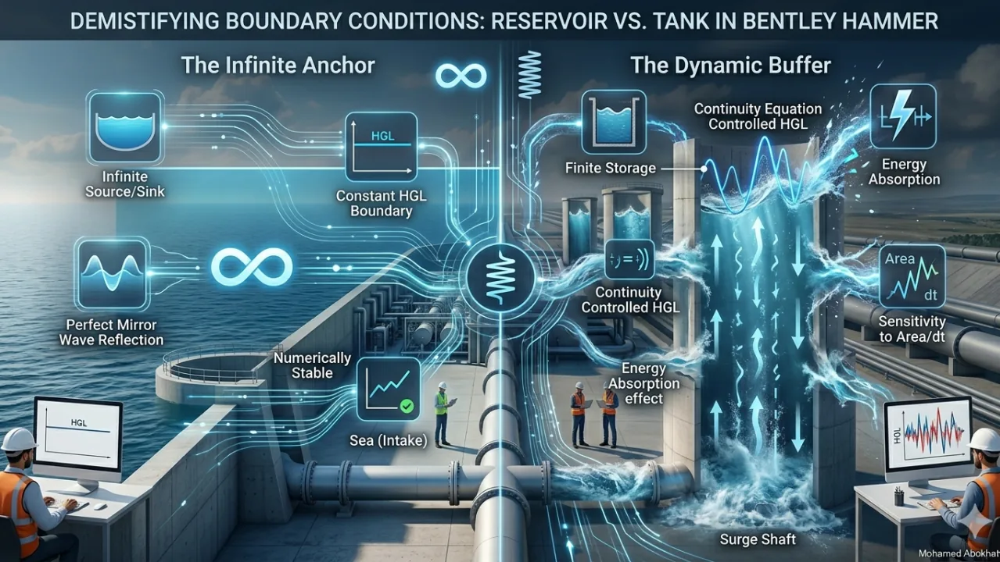
CML lining cracks at 2% deflection — far before the steel yields. A complete five-phase design walkthrough for DN 1600 mm steel pipelines under highway loading: D/t ratio check, hoop stress, Modified Iowa Equation for deflection, and vacuum buckling stability. Final wall thickness: 14 mm.
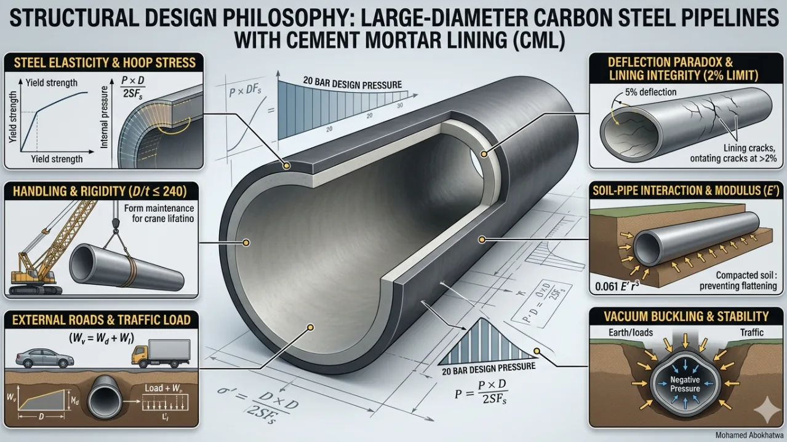
NPSH is the make-or-break parameter in pump station layout. A scenario-based guide covering suction lift, flooded suction, and submersible configurations — with vapor pressure corrections at 40–45°C seawater temperatures and a complete worked example for an SWRO intake pump station.
Static surge models become obsolete as systems age. A technical guide to building a Digital Twin for Surge — integrating 100 Hz pressure transducers, the Allievi equation in real time, and adaptive PID valve closure logic — to continuously protect 1200 mm+ transmission mains against pump trip events.
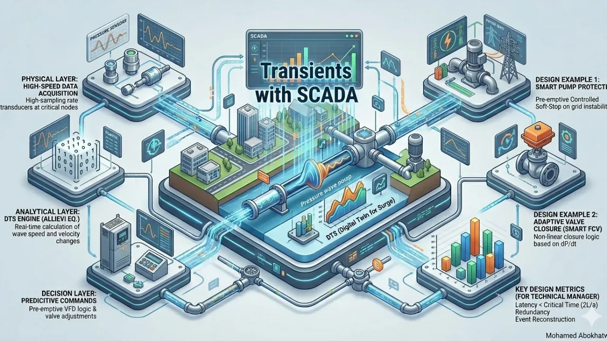
A 15-to-3 bar PRV pressure drop yields σ = 0.25 — severe cavitation territory where standard valves fail within months. The Cavitation Index explained with two worked examples, and three proven mitigation strategies: multi-stage reduction, anti-cavitation trim cages, and downstream orifice plates.
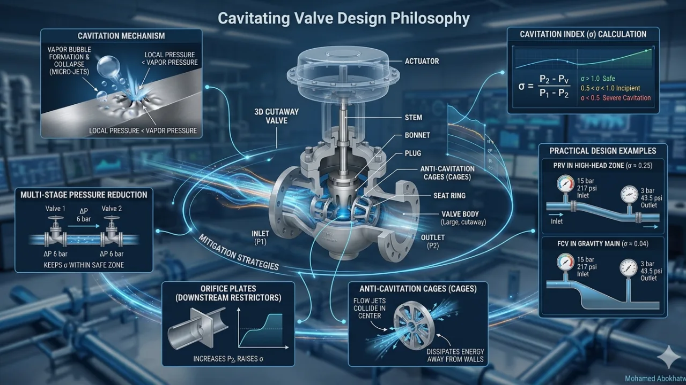
A swirl angle of just 3–5° at the suction bell significantly degrades pump efficiency and causes premature bearing failure. ANSI/HI 9.8 geometric constraints — submergence formula, back wall clearance, floor clearance — with guidance on trench-type wet wells and the role of physical scale modeling vs. CFD.
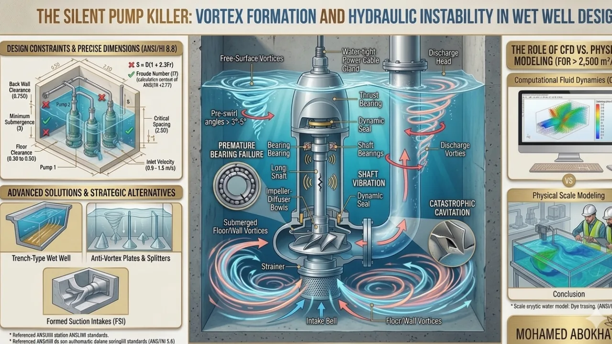
In high-static-head systems, reducing VFD frequency too far causes Dead-Head conditions — the pump rotates, consumes power, and moves zero water. A practitioner's guide to when VFDs work and when they don't, including impeller trimming and parallel pumping as more appropriate alternatives.
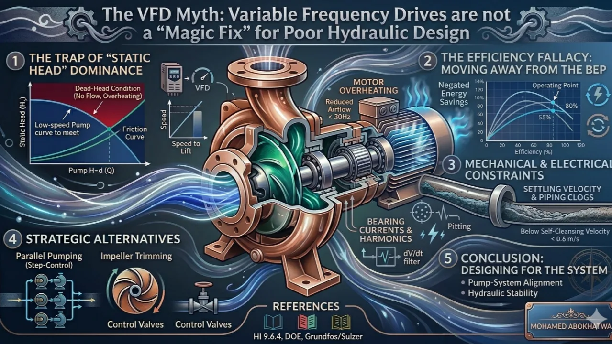
Improper air valve sizing and placement is a leading cause of large-diameter pipeline failure. A rigorous design methodology for DN 1000+ mains — HGL-based placement, vacuum protection sizing at ΔP = 0.35 bar limit, filling velocity below 0.3 m/s, and how to specify triple-function non-slam combination valves.
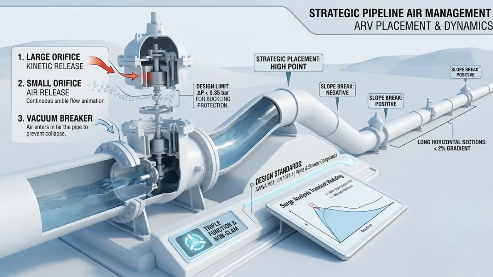
Air is both enemy and ally — throttling flow in steady state, yet preventing catastrophic collapse during pump trips. The HAMMER Discrete Gas Cavity Model (DGCM) limitation explained, with a hybrid protection strategy combining air valves and surge vessels for large transmission mains.
When a pipeline summit approaches the HGL, two failure modes emerge: air binding in steady state and column separation during pump trips. Design rules: maintain 5–10 m HGL clearance above pipe profile, minimum 0.3% ascending slope, and full vacuum-rated pipe class at critical summits.
A 0.1-second adjustment in HAMMER is a procurement decision worth thousands. How check valve closing time and cracking pressure in the transient model translate directly into nozzle check valve specifications — and how the right specification can reduce pipeline pressure class from PN25 to PN16.
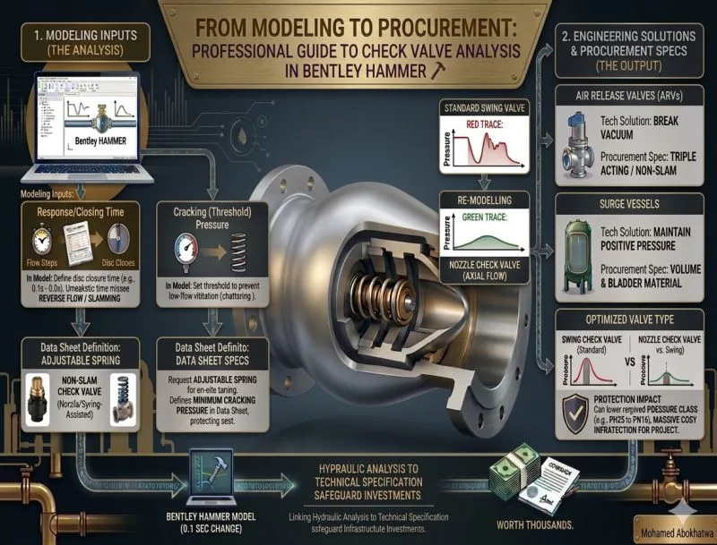
Three valves with fundamentally different control objectives and hydraulic behaviours. A concise comparison of PRV (downstream pressure), Altitude Valve (tank level), and FCV (flow rate limitation), with guidance on modern multi-pilot single-valve integration for compact valve chambers.
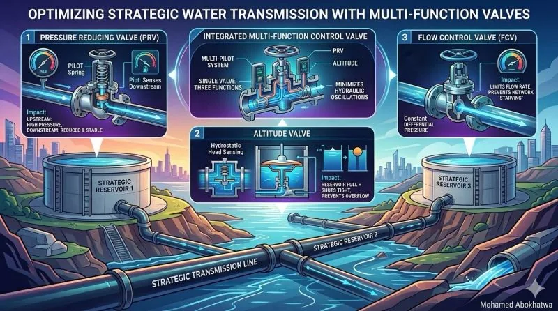
The pump purchase price is only 10–15% of total life cycle cost. Energy accounts for 80%. A framework for sustainable pump selection covering life cycle cost analysis, BEP operation, wire-to-water efficiency (IE3–IE5 motors), and designing pump stations for future demand growth.
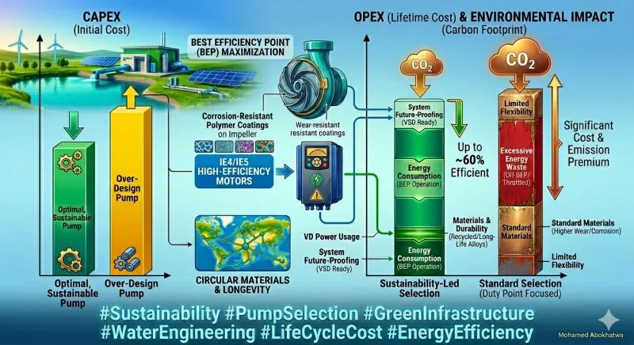
Every transient model begins from steady-state initial conditions. An incorrect baseline produces incorrect surge results. The three pillars — friction loss optimisation, BEP operating point verification, and pressure management — explained as the essential prerequisite to any surge study.
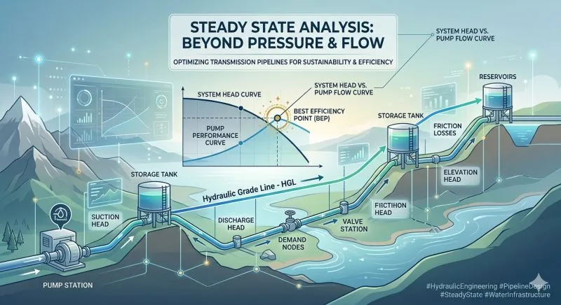
Surge analysis conducted after design is complete leads to expensive retrofits — pressure class upgrades, added vessel chambers, and revised pump station layouts. A practitioner's perspective on integrating transient analysis into the early design phase, from 700+ km pipeline projects in Saudi Arabia.
The gap between what is drawn and what can actually be built and operated costs projects dearly when ignored. Lessons on designing for buildability, anticipating field realities such as space constraints and unexpected interferences, and why "perfect designs" that cannot be executed are not a success.
The hardest engineering decisions are not made in the office — they are made on site, with incomplete information and no time. A reflection on the role of experience, judgment, and leadership in field decision-making, from 22 years of major water infrastructure delivery across Saudi Arabia.
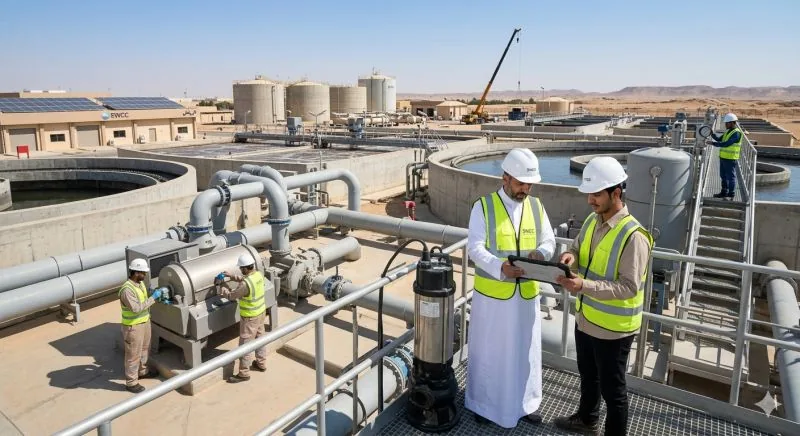
Sustainability is engineered in — not appended after the fact. The Envision framework applied to water infrastructure design, covering resilience, resource efficiency, and community enhancement as engineering disciplines rather than policy aspirations — with practical applications in Saudi Arabian water projects.
Projects don't fail from a lack of expertise — they fail when alignment, ownership, and decision-making are not managed effectively at scale. Lessons from 100+ km pipeline networks and 200,000 m³/day treatment facilities in Saudi Arabia on managing multidisciplinary teams and stakeholder expectations.
Sustainability commitments only become real when reflected in engineering specifications, material selections, and design decisions. How sustainability professionals must be embedded in the design process from the earliest concept stage — and how early drawing integration is the key to future-proof infrastructure.
A technical guide to DAF system design for mega-scale SWRO plants — surface loading rates, retention times, air-to-solids ratio, and micro-bubble mechanics for a 300,000 m³/day facility.
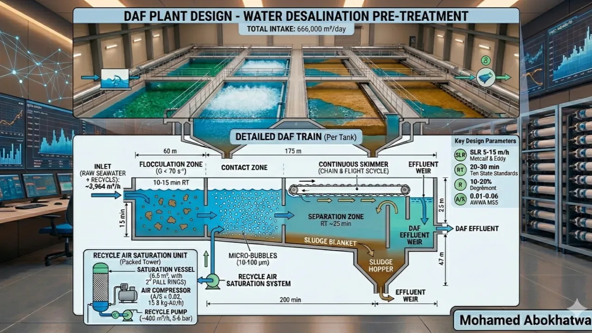
Advanced optimization strategies for SWRO facilities exceeding 500,000 m³/day — center port feed, pressure exchanger over-flush, and super duplex steel for 70+ bar systems.
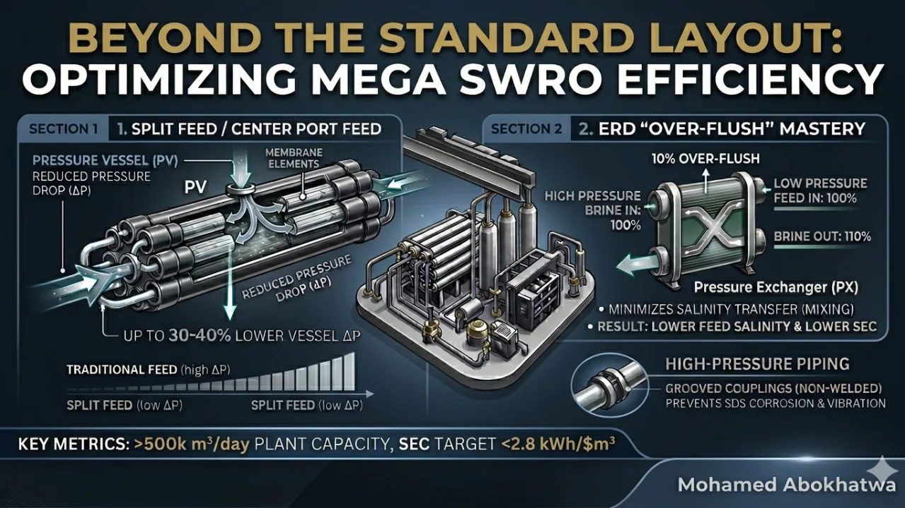
Conventional gravity clarification + sand filtration versus membrane-based pre-treatment — trade-offs in SDI performance, space, and lifecycle costs for 100,000 m³/day plants.
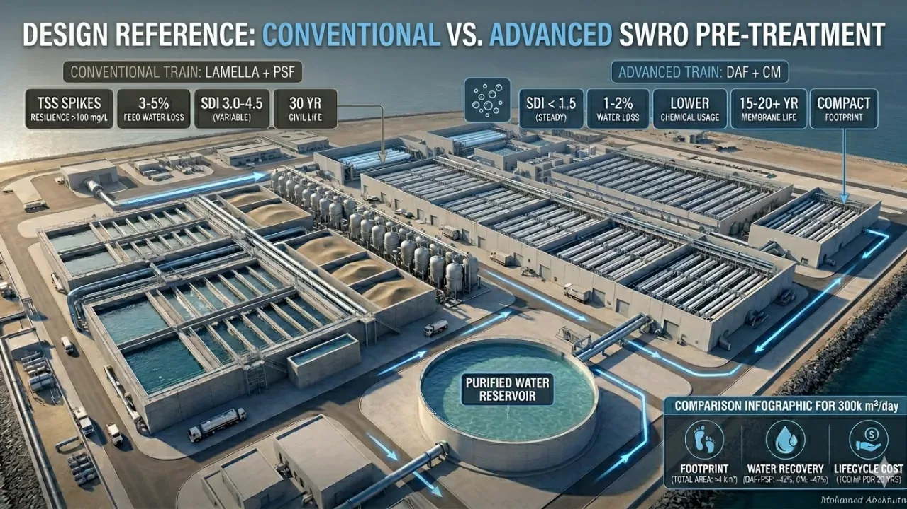
Why excessive safety margins backfire in RO plant design — flux distribution imbalances, pump BEP deviations, and the case for lean design with precise pretreatment control.
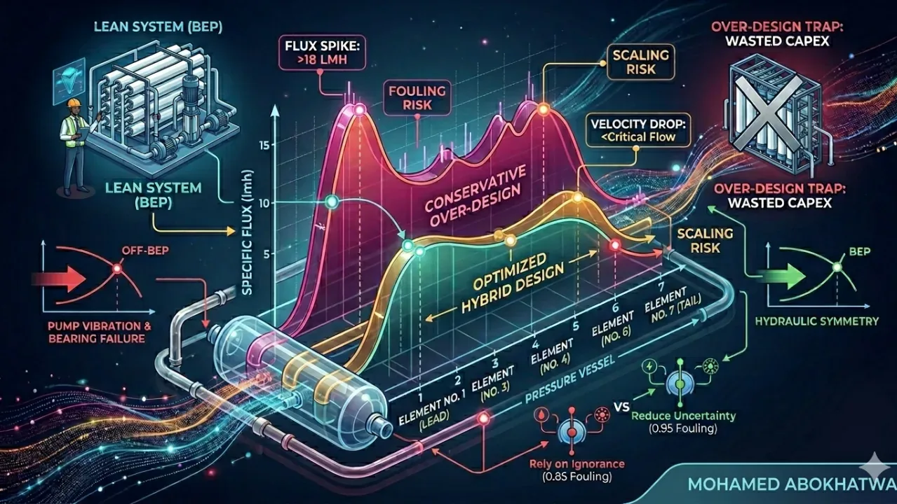
How chlorine acts as a double-edged sword in SWRO — from electro-chlorination at 0.5–1.0 mg/L to critical de-chlorination with sodium bisulfite before polyamide membranes.
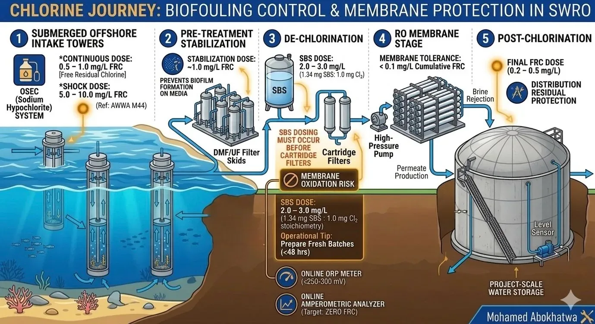
Designing offshore intakes for 30+ year lifespan — screen velocity limits, depth positioning below the photosynthetic zone, biofouling control, and rock armor for 100-year storm return periods.
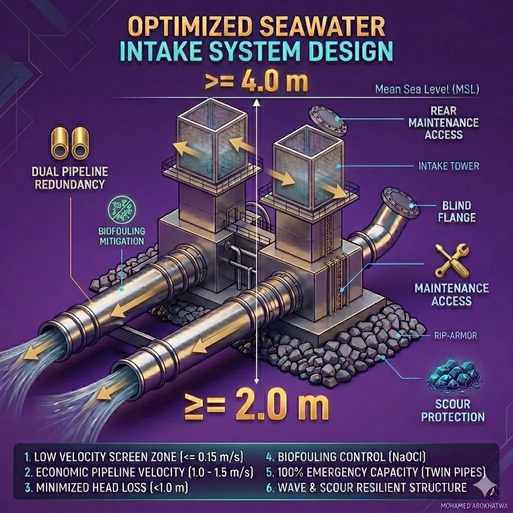
Strategic pH control across all SWRO stages — acid dosing to prevent CaCO₃ scaling, pH elevation for boron rejection, and re-mineralization to protect distribution network integrity.
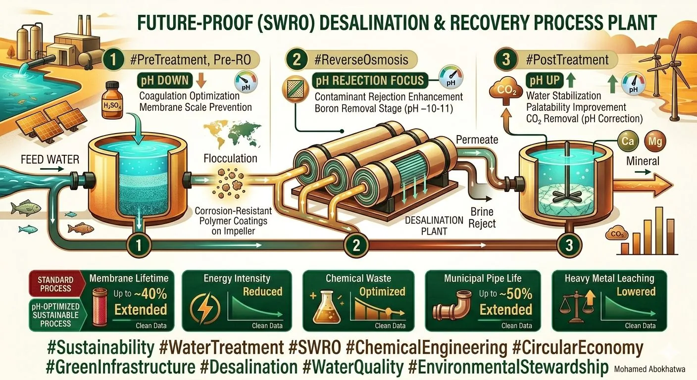
Practical onshore intake design for SWRO — receiving chamber velocities per HI 9.8, coarse and fine screening specs, suction basin 2.5D Rule, and hydraulic retention to prevent submerged vortices.
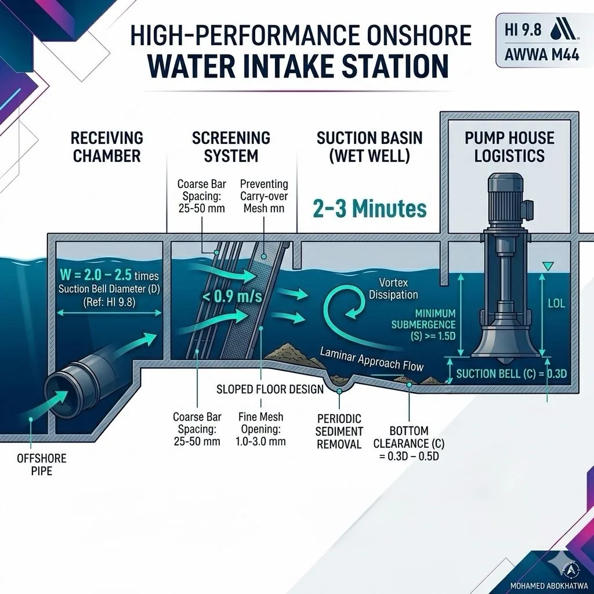
How isobaric Pressure Exchanger (PX) devices achieve ~60% reduction in energy consumption — transforming SWRO from an energy-intensive process into an economically and environmentally viable solution.
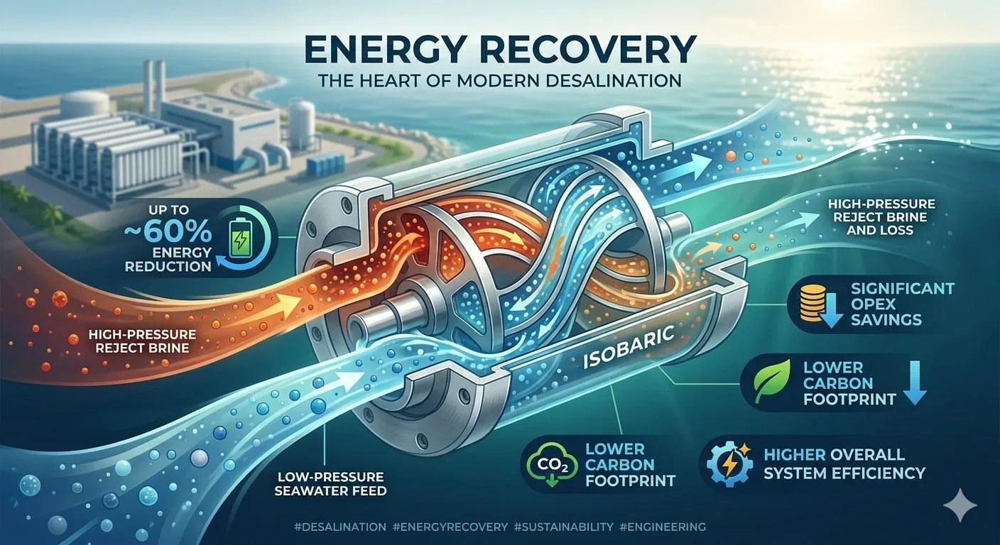